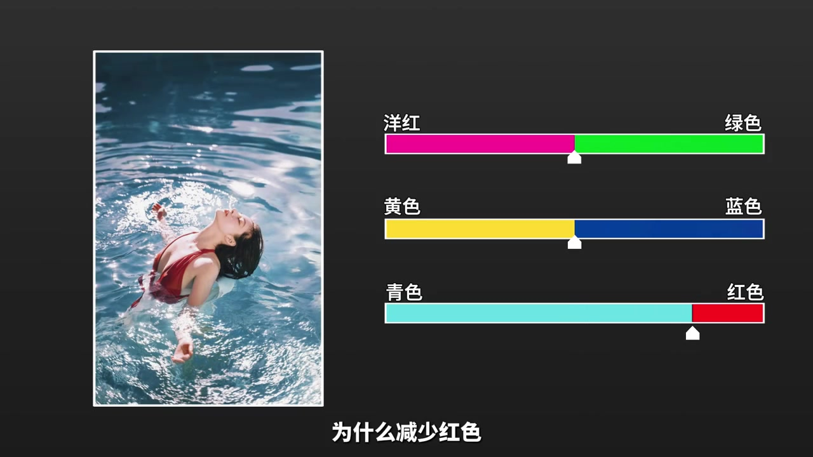
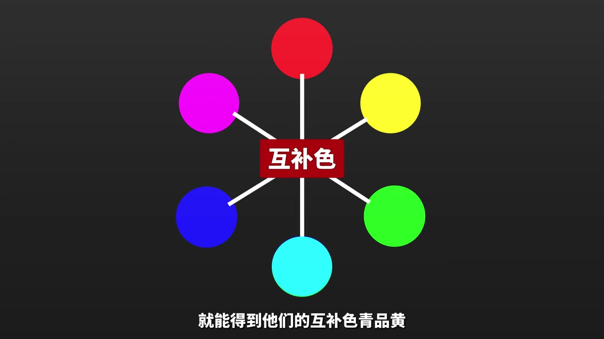
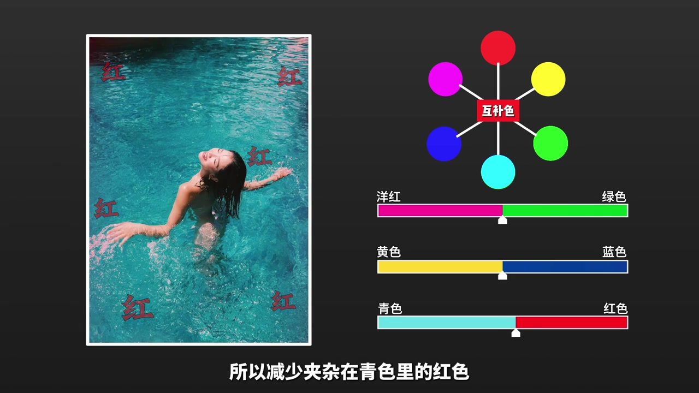
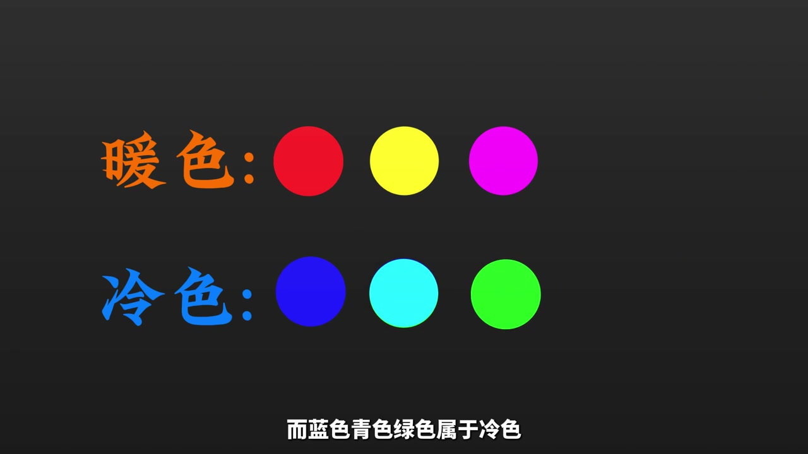
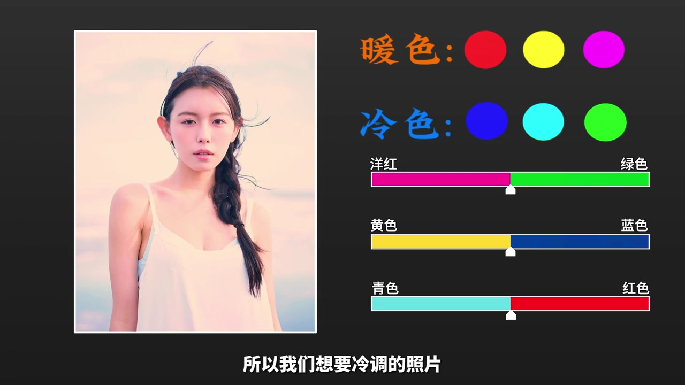

先抛出两个“减法”例子
视频一开头没有展示软件界面，而是直接用结论提问：为什么减少青色里的红色，水（画面）会变得更通透？为什么减少青色和蓝色，就能调出港风？这两个例子把“调色”框成做减法，而不是单纯加滤镜。
原声：“为什么减少红色水会变得通透；减少青色和蓝色就能调出岗峰。”（Whisper 将“港风”识别为“岗峰”，下文按语境理解为港风暖调。）

宣布今天学的是“调色逻辑”
讲述者把本节定位为逻辑讲解，而不是某个软件按钮教程。后续所有例子都围绕“颜色之间如何相互影响”展开。
从三原色到互补色，再到“画面变脏”
视频回顾基础：红、绿、蓝两两混合，得到青、品、黄等互补色。关键判断是——互补色叠加时，只要其中一方明度不是 100%，画面就会变脏。这为后面的“减少夹杂色”提供了理论依据。
原声：“互补色叠加时只要一方明度不是一百就会导致发挥变脏。”（Whisper 将“画面”识别为“发挥”，语义仍指向成像发灰发脏。）

两个具体减法：让青色通透、让蓝色纯净
理论落到操作：减少夹杂在青色里的红色，青色会更通透；减少蓝色里的黄色，蓝色会更纯净。讲述者把“干净”解释成去掉不该共存的颜色成分，而不是简单提高饱和度。

冷暖色分类，港风是暖调
视频把红、黄、洋红归为暖色，把蓝、青、绿归为冷色。开头的“港风”被定义为暖调，以红黄色为主；要调出来，需要减少冷色里的蓝、青。到这里，氛围感被翻译成“冷暖比例”问题。

最后给出两条对称配方
视频在结尾压缩成两句可记的话：想要冷调照片，就按不同比例减少暖色；想要暖调照片，就按不同比例减少冷色。比例没有被量化，但方向足够明确——氛围来自对立色系的取舍。
原声：“想要冷调的照片只需要减少不同比例的暖色；想要暖调的照片只需要减少不同比例的冷色。”

说明：视频未展示具体软件曲线或 HSL 面板，上述“减少某色”应理解为方向性提示；不同素材需要的比例需自行试错。